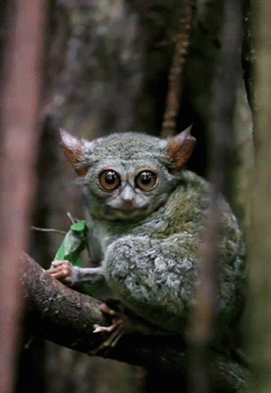
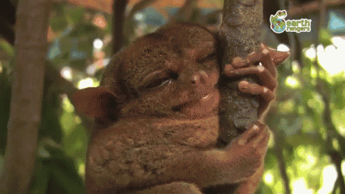
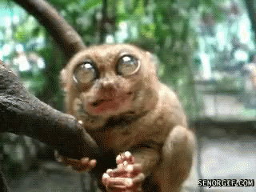
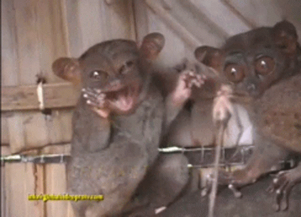

Tarsier'i yakalamaya çalışın! Ona tıklayınca kaçacak, sonunda sizinle konuşmaya başlayacak.
⭐ ÖZEL TEKLİF ⭐
Kendi Tarsier'inizi Sahiplenin!
SADECE 999.99 TL!
(Şaka yapıyorum, tabii ki satmıyoruz! Ama bilgi alabilirsiniz 😊)




Tarsier Hakkında Detaylı Bilgiler
Özellikler
- Bilimsel Adı: Tarsius
- Boyutu: 10-15 cm (vücut)
- Kuyruk: 20-25 cm
- Ağırlık: 80-160 gram
- Yaşam Süresi: 12-20 yıl
- Habitat: Güneydoğu Asya
Bakım Gereksinimleri
- Gece aktif olduğu için gündüz sessiz ortam
- Böceklerle beslenir (günde 10-15 böcek)
- Geniş dikey yaşam alanı
- 20-30°C sıcaklık
- %60-80 nem oranı
İlginç Gerçekler
- Gözleri beyinlerinden büyük tek memeli
- Kafalarını 180° çevirebilirler
- Mükemmel gece görüşü
- Sessiz iletişim kurarlar
- Tek eşli yaşarlar
Müşteri Yorumları
"Tarsier'im Mort sayesinde evimiz neşe doldu! Her sabah onun sevimli bakışlarıyla uyanıyorum."
- Ayşe K., İstanbul
"Başta çekinsem de şimdi onsuz bir hayat düşünemiyorum. Böcekleri yakalayışını izlemek paha biçilemez!"
- Mehmet T., Ankara